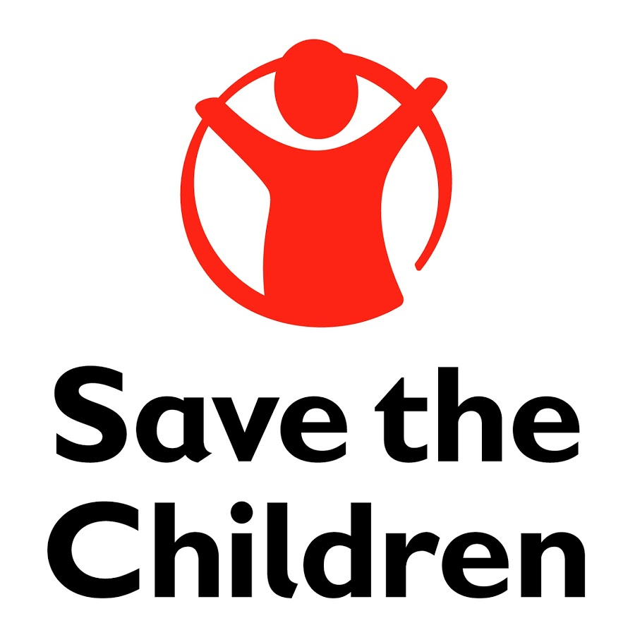
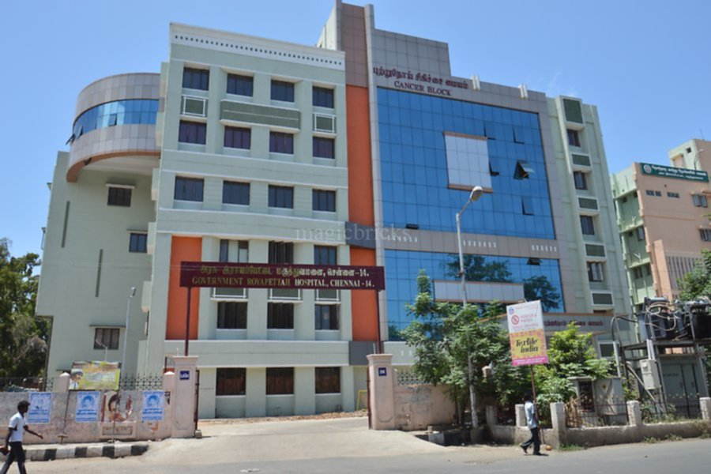

Child care is the action or skill of looking after children by a day-care center, nannies, babysitter, teachers or other providers.They look after those children who are abused mentally or physically.In a childcare center, doctors focus on the physical and mental developments of their patients. In order to have a greater understanding of the patients,dosctors in centers must incorporate a relationship with their patients that benefits their wants and needs while pushing them toward a higher set of values. This type of teaching with a caring relationship will improve a parent's moral and incidental learning.
Fortis Malar Hospital, Chennai offers comprehensive medical care in more than 40 specialties such as cardiology, cardio-thoracic surgery, neurology, neurosurgery, orthopaedics, nephrology, gynaecology, gastroenterology, urology, paediatrics, and diabetes among others.
Address No.52, 1st Main Road,Gandhi Nagar, Adyar, Chennai, Tamil Nadu 600020
Contact us- +91 44 4289 2222
Email-Id malar@fortishealthcare.com
Save the Children is the best NGO that works for rights of children including child education and child protection in India. Donate to charity to support save the children. Phone: +91 1244752000 Email ID: c.sethi@savethechildren.in
Government Royapettah Hospital is a major state-owned hospital situated in Royapettah in Chennai, India. The hospital with 712 beds is funded and managed by the state government of Tamil Nadu. Government Royapettah Hospital is a major state-owned hospital situated in Royapettah in Chennai, India. The hospital with 712 beds is funded and managed by the state government of Tamil Nadu Phone: 044 2848 3051
